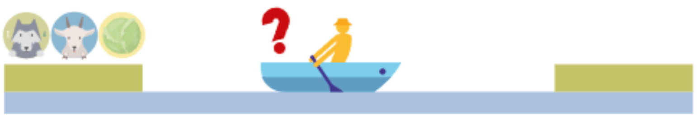
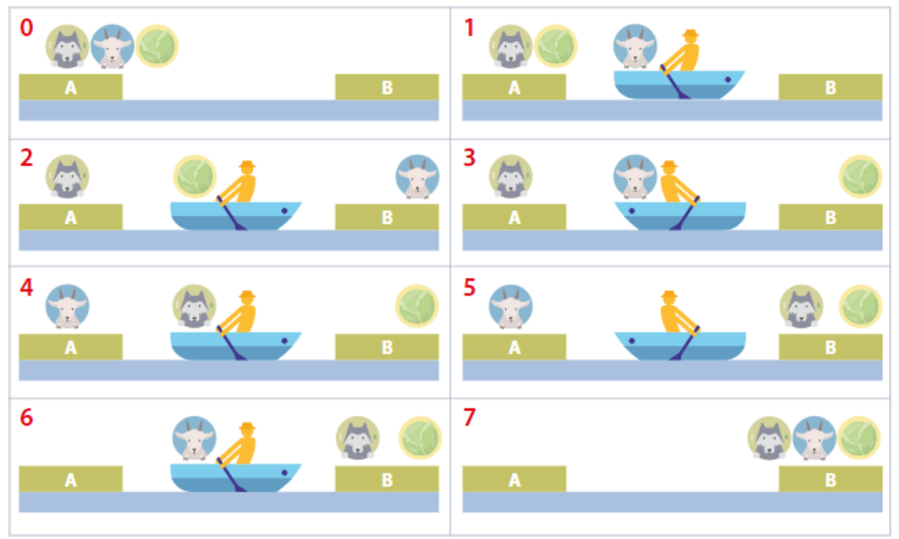

Obiettivo: modellare un problema come ricerca di una sequenza di mosse che rispetti determinati vincoli.
Su una riva di un fiume ci sono un contadino, un lupo, una capra e un cavolo. Il contadino dispone di una barca sulla quale può portare con sé una sola cosa alla volta. Come può trasferire tutti sull'altra riva sapendo che:

In questa pagina risolviamo una singola istanza: tutti sulla riva A, barca sulla riva A, capacità di un solo passeggero oltre al contadino.
Rappresentiamo uno stato con la posizione di contadino, lupo, capra e cavolo. Ogni posizione può valere A oppure B; la barca si trova sempre sulla stessa riva del contadino, che è l'unico a poterla guidare.
(A, A, A, A).(B, B, B, B).La relazione tra stati descrive le mosse possibili; la relazione tra input e output stabilisce invece se un'intera sequenza è una soluzione corretta.
Prima di aprire la risposta, prova a scegliere il primo passeggero. Dopo ogni mossa controlla entrambe le rive: una sequenza è corretta soltanto se tutti gli stati intermedi sono sicuri.

porta(CAPRA, A → B)
torna_solo(B → A)
porta(CAVOLO, A → B)
riporta(CAPRA, B → A)
porta(LUPO, A → B)
torna_solo(B → A)
porta(CAPRA, A → B)La correttezza si verifica controllando i vincoli di sicurezza dopo ciascun attraversamento.